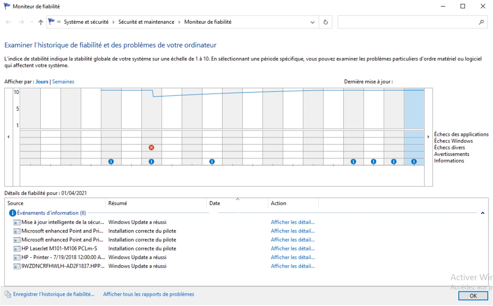
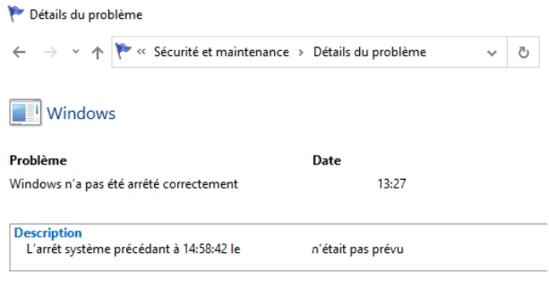

Transcription du document du dossier TSSR, adaptée à une lecture Web. Les compléments pédagogiques figurent dans leur onglet distinct.
Maintenance du système — proposition de solution
TP du Module 10 — La maintenance du système.
Sur Win10-XX
Affichez et analysez les problèmes majeurs survenus sur votre système :
depuis le démarrage de votre VM et de manière synthétique ;
de manière détaillée sur le dernier évènement critique. Au cas où aucun évènement critique n’est survenu depuis le début du module, procédez à un arrêt brutal de votre VM WorkStation : PowerOFF.
Rechercher > Afficher l’historique de fiabilité.
L’indice de fiabilité a chuté le jour où des échecs divers sont survenus, symbolisés par la croix blanche dans le cercle rouge, puis est remonté petit à petit les jours suivants.
Double clic sur l’évènement critique.

Capture du support — Historique de fiabilité et évènement critique du scénario.
Analyse en temps réel
Lancez plusieurs tâches : copiez un gros fichier disponible sur le partage [CHEMIN A INDIQUER], démarrez les applications console PowerShell, Gestionnaire des tâches, Edge…
Avec les outils adaptés et en temps réel, recherchez les processus qui consomment le plus de performances sur les quatre composants principaux.
Remplissez le tableau suivant ; indiquez les ressources utilisées lors du traitement des différentes tâches en cours.
À l’aide du Gestionnaire de tâches et du Moniteur de ressources, vous pouvez lire, trier les informations puis les indiquer dans le tableau. Il n’existe pas de correction typique ici puisque les informations varient en fonction des ressources matérielles et de l’utilisation de la bande passante.
Ressources
Observations
Processeurs
À relever sur la machine.
Mémoire
À relever sur la machine.
Réseau
À relever sur la machine.
Disque dur
À relever sur la machine.
Sauvegarde de l’état du système et des données — préparation
Vérifiez la configuration de la Protection du système.
Vérifiez les points de restauration disponibles.
Créez si nécessaire un point de restauration manuel.
Créez des fichiers dans le répertoire Documents de l’utilisateur en cours d’utilisation.

Capture du support — Détails de l’évènement critique illustré dans la correction.
Protection du système et fonctionnalités
Désactivez ou désinstallez des fonctionnalités Windows de votre système : Lecteur Windows Media, IE11.
Rechercher > sysdm.cpl.
Onglet Protection du système.
Par défaut, la protection du système n’est activée sur aucun volume. Il n’y a donc aucun point de restauration disponible.
Pour créer un point de restauration manuel :
Sélectionnez Disque local (C:) (Système).
Configurer….
Cocher Activer la protection du système.
Déplacer le curseur vers la gauche pour obtenir environ 5 % d’espace disque dédié au stockage des points de restauration système.
Appliquer > OK. La protection du système est maintenant activée sur le volume qui héberge le système.
Créer….
Donner un nom au point de restauration : Atelier13.
Dans le dossier Documents de l’utilisateur en cours, créer quelques fichiers, dossiers, documents facilement identifiables, par exemple Rep-Atelier13, FicAtelier13.txt…
Le Lecteur Windows Media et Internet Explorer 11 sont des fonctionnalités Windows. Pour les désinstaller :
Paramètres Windows > Gérer les fonctionnalités facultatives.
Cliquer sur Internet Explorer 11, puis Désinstaller.
Cliquer sur Lecteur Windows Media, puis Désinstaller.
Il est ensuite possible de les réinstaller en cliquant sur Ajouter une fonctionnalité.
Pour simplement désactiver ces fonctionnalités, passer par Panneau de configuration > Programmes > Activer ou désactiver des fonctionnalités Windows.
À l’aide de WinRE, restaurez l’état du système grâce au dernier point de restauration disponible puis démarrez Windows normalement.
Retrouvez-vous les fichiers dans le dossier Documents du dernier utilisateur ? Pouvez-vous lancer IE11 ? Le Lecteur Windows Media ? Pourquoi ?
Restauration avec WinRE
Clic droit sur le menu Démarrer > Arrêter ou se déconnecter. Maintenir Shift, puis cliquer sur Redémarrer.
Des informations apparaissent à l’écran et concernent la désinstallation ou la désactivation des fonctionnalités Windows IE11 et Lecteur Windows Media.
Le système d’exploitation de secours WinRE démarre ; il est indépendant du système Windows.
Dépannage > Options avancées > Restauration du système.
Choisissez un compte administrateur pour continuer puis indiquez son mot de passe.
L’assistant Restauration du système se lance : Suivant.
Sélectionnez votre point de restauration : Terminer > Oui.
Attendez quelques secondes puis cliquez sur Redémarrer.
Un message d’information indique que la restauration du système s’est correctement exécutée.
Nous retrouvons nos fonctionnalités Windows IE11 et le Lecteur Windows Media ; cela est logique puisque nous les avions désinstallées ou désactivées après avoir créé le point de restauration.
Nous retrouvons nos fichiers dans le dossier Documents de l’utilisateur alors que nous avons effectué le point de restauration avant leur création. Cela prouve que le point de restauration n’affecte pas les données utilisateurs.